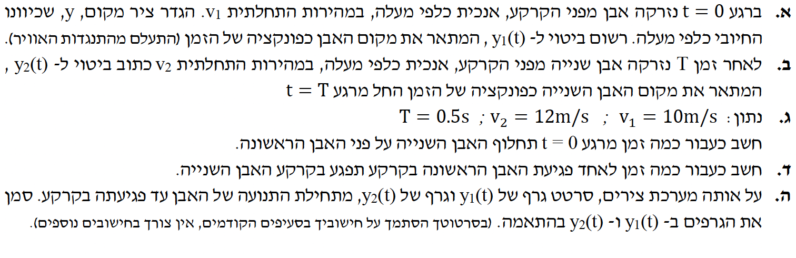

ברגע $t=0$, אבן ראשונה נזרקת כלפי מעלה מהקרקע. לכן מיקומה ההתחלתי הוא בראשית הצירים: $y_0 = 0$. כיוון הציר החיובי מוגדר כלפי מעלה. גודל המהירות ההתחלתית הוא $v_1$ (חיובית, כיוון שהיא בכיוון הציר). על האבן פועל כוח הכובד בלבד.
את הפונקציה הקינמטית $y_1(t)$ המתארת את מיקום האבן הראשונה בכל רגע נתון.
נשתמש בנוסחת המקום-זמן מתוך דף הנוסחאות ונתאים אותה לציר ה-$y$ שבחרנו. מכיוון שהגוף מושפע רק מכוח הכובד, תאוצתו קבועה. גודל תאוצת הכובד הוא $g = 10 \text{ m/s}^2$. מאחר והציר מכוון כלפי מעלה ואילו כוח הכובד פועל כלפי מטה, תאוצת האבן תהיה שלילית: $a = -g$. נציב במשוואה $y_0=0$, $v_0=v_1$ ו-$a=-g$ ונקבל:
אבן שנייה נזרקת מאותה נקודה ($y_0 = 0$) ובאותו כיוון מעלה. עם זאת, היא נזרקת באיחור של זמן $T$. מהירותה ההתחלתית היא $v_2$.
את פונקציית המקום-זמן לאבן השנייה, $y_2(t)$, כתלות בזמן הכללי $t$.
מכיוון שהאבן השנייה מתחילה לנוע רק ברגע $t=T$, משך זמן התנועה שלה קצר יותר ב-$T$ שניות לעומת האבן הראשונה. לכן, זמן התנועה נטו של האבן השנייה הוא $(t - T)$. נציב נתון זה יחד עם $v_0 = v_2$ ו-$a = -g$ לתוך משוואת הקינמטיקה:
כעת אנו מקבלים את הערכים המספריים לפרמטרים הקינמטיים כפי שרוכזו בתיבה מעלה.
הזמן $t$ (מרגע התחלת התנועה של אבן 1) שבו האבן השנייה חולפת על פני הראשונה. משמעות פיזיקלית: השוואת מיקומים $y_1(t) = y_2(t)$.
ראשית, נציב את הנתונים המספריים לתוך משוואות התנועה שבנינו בסעיפים הקודמים:
כעת, נשווה בין הפונקציות כדי למצוא את נקודת המפגש. נפתח סוגריים בצורה מסודרת והדרגתית:
נוכל לשים לב שהאיבר $-5t^2$ מופיע בשני אגפי המשוואה, ולכן הם מבטלים זה את זה (תאוצתם היחסית אפס). נכנס איברים דומים:
תשובה סופית: האבן השנייה תחלוף על פני הראשונה כעבור $1.036 \text{ s}$ מרגע הזריקה של האבן הראשונה.
המשוואות הקינמטיות משלב ג'. פגיעה בקרקע משמעותה חזרה לגובה ההתחלתי, כלומר $y=0$.
את הפרש הזמנים $\Delta t$ בין פגיעת האבן הראשונה בקרקע לבין פגיעת האבן השנייה בקרקע.
נחשב את זמן הפגיעה בקרקע לכל אבן בנפרד על ידי השוואת פונקציית המקום לאפס.
עבור האבן הראשונה:
הפתרון $t=0$ מייצג את רגע הזריקה. הפתרון הרלוונטי לפגיעה בקרקע הוא $t_1 = 2 \text{ s}$.
עבור האבן השנייה:
נוציא גורם משותף $(t-0.5)$:
הפתרון $t=0.5$ הוא רגע הזריקה של האבן השנייה. נפתור את החלק השני לאיפוס הסוגריים המרובעים:
הפרש הזמנים בין הפגיעות בקרקע הוא:
תשובה סופית: האבן השנייה תפגע בקרקע $0.9 \text{ s}$ לאחר שהאבן הראשונה תפגע.
פונקציות המקום $y_1(t)$ ו-$y_2(t)$, כולל תחום ההגדרה של כל אחת (מזריקה ועד פגיעה בקרקע).
להציג באופן ויזואלי גרף מקום-זמן של שתי התנועות במערכת צירים משותפת.
ניתן לרחף או ללחוץ על קווי הגרף והנקודה כדי לראות את הערכים המדויקים בכל רגע.